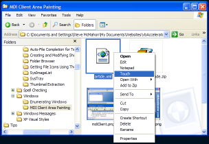

Touch Demonstration (11K)
Touch Demonstration (11K)
 Bugs: 1 / 1
Bugs: 1 / 1
 Issues: 0 / 0
Issues: 0 / 0
 Questions: 0 / 0
Questions: 0 / 0
 5 Apr 2003
5 Apr 2003
First Posted

Associating Applications with Any File or Folder
Demonstrates how to add global commands to shortcut for files and/or folders
Applications such as WinZip add new items to Explorer's File and context menus for all files and folders on the system. Although WinZip uses Shell Extensions to achieve this, it is much easier to do using verbs. This article demonstrates how to use the .NET Registry classes to add new shortcut verbs for all files and/or all folders. You may find the Touch utility provided in the demonstration is quite useful too!
Adding Verbs for All Files and Folders
As well as the standard context menus for files with particular extensions, Windows also provides a method to apply items to context menus for whole classes of objects, such as all files, all folders, all file folders and so on. These global objects are described in the Platform SDK documentation under the article "Creating Shell Extension Handlers", section "Predefined Shell Objects".
There are fourteen different predefined objects in the Shell, of which two can only be extended using a Shell Handler. The remaining twelve are as follows:
| Name | Description |
| * | All files |
| AllFileSystemObjects | All files and file folders |
| Folder | All folders (whether file system or extended) |
| Directory | All file folders |
| Network | The Entire Network item under My Network Places |
| Network\Type\# | All network objects of type #, where # is one of the network types given in the Winnetwk.h header file (WNNC_NET_* values) in the Platform SDK |
| NetShare | All Network Shares |
| NetServer | All Network Servers |
| network_provider_name | All objects provided by network provided network_provider_name |
| AudioCD | An Audio CD in CD Drive |
| DVDFile, DVD | A DVD Drive. DVDFile is used under Windows 98/ME, DVD is used for Windows 2000 and above. |
To add a verb to any of these items, you add an item to the registry under the key
HKEY_CLASSES_ROOT\[item]\Shell
Where [item] is one of the pre-defined names given above. For example, if you wanted to add a new menu item for all files which allows them to be directly opened with Notepad, with a context menu entry "&View Text" then you would add these entries:
HKEY_CLASSES_ROOT*shellNotepad (Default) REG_SZ &View Text
Command (Default) REG_SZ Notepad.exe "%1"
You can easily change the Command default value so it points to your favourite text editor rather than Notepad. It's certainly made me extremely happy (I'm easy to please) that I don't need to go through the tedious "Open With..." dialog for every file I want a quick peek at. And no, I don't want to Use the Web service to find the appropriate program.
You easily apply this from .NET to create applications which work directly on multiple files. The demonstration download provides a Touch utility which integrates into the context menu. (In case you haven't used U*IX, the touch command simply updates the last modified date of a file to the current date and time. It's very useful if you run batch processes against modified files and want to force a modification). The actual Touch portion of the code consists of, ahem, one line, which hopefully means it doesn't have too many bugs. The rest of the code just uses the Microsoft.Win32 registry classes to install the context menu command for all files.